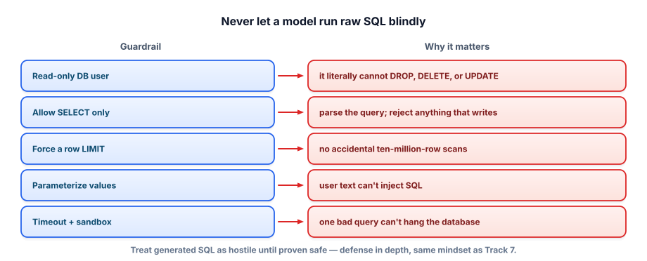

Generating safe, correct SQL
You are about to let a language model write queries that run against your database. That sentence should make you nervous — and this lesson turns that nervousness into layered, boring, reliable safety.
Letting a model write SQL is like letting a new driver take the family car. You tell them to drive carefully (the prompt), but you also give them a car with a speed limiter (timeout), a small fuel tank (row and cost caps), and no keys to the truck (a read-only account). If they ignore your advice, the car itself still will not do the dangerous thing. The analogy breaks because a new driver is not being actively tricked; a model can be prompt-injected by text hidden in the very data it reads.
Why you never trust generated SQL
A model can be prompt-injected (Track 7): a malicious value in the data, or a cleverly worded question, can steer it into producing DROP TABLE customers; or DELETE FROM orders;. Even without an attacker, a well-meaning model can write a query that scans a billion rows and takes your database down, or one that exposes data the user shouldn’t see.
The rule is simple and absolute: never rely on the prompt for safety. “Please only write SELECT statements” is a request, not a guarantee — and a request is not a security control. Safety has to live in the system around the model, in layers, so that if one fails the others still hold.

The layers, strongest first
1 · A read-only database user (your bedrock). Connect using credentials that only have SELECT permission. Now it is physically impossible for any generated query to modify or delete data — the database itself refuses. This is the one control an attacker cannot prompt their way around, so it’s non-negotiable. Everything else is a helpful addition on top.
2 · Validate that it’s a single read. Before running, check the query is one statement and starts with SELECT (or WITH), and reject stacked statements (a semicolon followed by more SQL). This catches obvious writes early and gives a clean error instead of a database rejection.
3 · Force a row limit. Wrap or inject a LIMIT so even a query over a huge table returns bounded results — protecting both latency and memory.
4 · Parameterize any user-supplied values so raw user text is never concatenated into SQL, and 5 · set a timeout so a pathological query is cancelled rather than hanging the connection.
import sqlite3
def validate(sql):
q = sql.strip().rstrip(";").strip()
if ";" in q: # block stacked statements
raise ValueError("only a single statement is allowed")
if not q.lower().startswith(("select", "with")): # reads only
raise ValueError("only SELECT queries are allowed")
return q
def run_readonly(sql, db_path):
q = validate(sql)
# open the DB in read-only mode — a second, hard guarantee
con = sqlite3.connect(f"file:{db_path}?mode=ro", uri=True)
try:
# wrap, don't append: "... LIMIT 3" + " LIMIT 1000" is a syntax error
rows = con.execute(f"SELECT * FROM ({q}) LIMIT 1000").fetchall() # bound the result
finally:
con.close()
return rowsNote the belt and braces: validate rejects non-reads, and mode=ro makes the connection itself read-only so even a write that slipped past validation would fail at the database. That redundancy is the whole idea of defense in depth — you assume each layer is imperfect.
Putting your safety in the prompt (“do not write destructive queries”) and then executing whatever comes back with a normal read-write connection. One prompt injection and your data is gone. The prompt is a hint; the permissions are the wall.
Assumptions: a 2 TB orders fact table, a scan rate of about 1 GB/s on the read replica (measure yours), rows of about 200 bytes, and a model that occasionally forgets a WHERE clause.
- The runaway. A full scan of 2 TB at 1 GB/s is 2,000 s, about 33 minutes of replica time per bad query. Ten users retrying makes the replica useless for everyone.
- Postgres: timeout. statement_timeout aborts any statement that runs longer than the value; the default 0 disables it (Postgres docs). Set it on the text-to-SQL role, e.g. 15 s, so the 33-minute scan dies after 15 seconds.
- Postgres: permissions. GRANT only SELECT on the analytics schema to that role. default_transaction_read_only = on adds a second layer, but a session can change it, so the GRANT is the real wall.
- Row cap. 1,000 rows x 200 bytes = 200 KB to the app. An uncapped SELECT * of 10 M rows is 2 GB pulled into your API process.
- BigQuery is different. Google's docs say a LIMIT clause does not reduce compute cost on non-clustered tables; use the maximum bytes billed setting, which fails the query before it runs if the estimate is over the limit, without a charge (BigQuery cost best practices). A row LIMIT protects your app, not your bill.
- Snowflake. STATEMENT_TIMEOUT_IN_SECONDS defaults to two days (Snowflake parameters). Set it low on the warehouse or user that serves the tool.
Same idea in every engine: the limits live in the database, configured for the model's account, not in the prompt.
- Never trust generated SQL — and never make the prompt your only defense.
- The bedrock control is a read-only database user: writes become physically impossible.
- Add layers: validate SELECT-only & single-statement, force a LIMIT, parameterize values, set a timeout.
- Defense in depth: assume any one layer can fail, so keep several (e.g. validation and a read-only connection).
- This is Track 7’s security mindset applied to databases.
A teammate’s text-to-SQL endpoint runs the model’s output directly with a normal (read-write) connection, relying on a prompt line: “only generate SELECT statements.” List the concrete changes you’d make, in priority order, and say which single change matters most and why.
▸ Show solution & reasoning
Priority order: (1) switch to a read-only database user — this alone makes destructive queries impossible regardless of what the model emits. (2) Add code validation that the query is a single SELECT/WITH, rejecting semicolon-stacked statements. (3) Enforce a LIMIT and a statement timeout to bound cost and stop runaway scans. (4) Parameterize any user-supplied literals rather than concatenating them. (5) Keep the prompt instruction too — it reduces bad generations — but treat it as a hint, not a control.
Which matters most: the read-only user. Every other layer reduces the chance of a bad query; the read-only permission removes the possibility of a damaging one. Security controls that make an attack impossible beat controls that make it merely less likely — and it’s the one thing a prompt injection can’t argue with. Notice this is straight least-privilege thinking: give the component exactly the access it needs (read) and nothing more.
Which control most reliably prevents a prompt-injected text-to-SQL system from deleting data?
Why check the parsed statement type instead of scanning for the word 'delete'?
Your text-to-SQL tool on BigQuery appends LIMIT 1000 to every query. A user's question triggers a SELECT over a 5 TB non-clustered table. What does the LIMIT do for cost?
We’ve focused on security safety — no deletes, no injection, no runaway scans. But there’s a quieter safety that matters just as much in analytics: not returning a confident wrong answer. A query that silently double-counts through a fan-out join, or misses rows because of a null in the join key, is a different kind of unsafe — it corrupts decisions instead of data. Some of the same discipline helps here: constrain the surface (curated views with the joins baked in), and validate the shape of results (did we expect one row and get thousands?).
The deeper move is to make the system show its work. Returning the generated SQL alongside the answer — and, in a good UI, the row count and a sample — lets a user sanity-check the “how” behind the number, turning a black box into something auditable. This dovetails with grounding and citations from RAG: just as a RAG answer should point to its sources, a text-to-SQL answer should point to the query that produced it. Transparency doesn’t make the SQL correct, but it makes wrongness visible, which is the next best thing — and it’s exactly what earns trust from the analysts whose bottleneck you’re trying to remove.
labs/09_text_to_sql_duckdb.pyFree and offline once set up: Ollama with qwen2.5:7b, plus the packages in labs/README.md. From the course folder:
python labs/09_text_to_sql_duckdb.pyWhat to look for: Find the lab's SELECT-only validation and row limit. Feed it a few hostile strings by hand: a DELETE, a SELECT followed by a semicolon and DROP TABLE, and a CTE that ends in a DELETE (WITH x AS (SELECT 1) DELETE FROM t), which starts with WITH and so passes a naive prefix check. Note which layer stops each one. Then ask a question whose correct answer has its own LIMIT 3 and confirm the row-limit wrapper does not break it.
▸ Recorded output (our run, 2026-11-03, qwen2.5:7b on a laptop GPU)
Q: What share of orders were returned? Give a fraction between 0 and 1.
SQL: SELECT SUM(CASE WHEN status = 'returned' THEN 1 ELSE 0 END) / COUNT(*) AS return_share FROM orders;
PASS fixes=0 got=[(0.09483333333333334,)] gold=[(0.09483333333333334,)]
Q: Average delivered order value for Plus members vs non-members.
SQL: SELECT AVG(CASE WHEN c.is_plus THEN o.amount_rs ELSE NULL END) AS avg_plus, AVG(CASE WHEN NOT c.is_plus THEN o.amount_rs ELSE NULL END) AS avg_non_plu
FAIL fixes=0 got=[(4945.648507917174, 5045.7609119496865)] gold=[(False, 5045.760911949686), (True, 4945.648507917174)]
Q: How many customers placed no orders at all?
SQL: SELECT COUNT(*) FROM customers WHERE customer_id NOT IN (SELECT customer_id FROM orders WHERE status = 'delivered')
PASS fixes=0 got=[(50,)] gold=[(50,)]
execution accuracy: 5/6
3) A user asks for something destructive
blocked by the gate: DELETE is not allowed (SELECT only)
Look: safety comes from the parser + read-only principal + row cap, not from asking the model nicely.
Wrong-but-valid SQL (a FAIL above) is the harder problem; only an eval set with gold answers catches it.Your numbers will differ a little run to run. Full log: labs/outputs. Source: labs/09_text_to_sql_duckdb.py.
Warm-up. In SQLite, WITH x AS (SELECT 1) DELETE FROM orders starts with WITH. Does the page's validate() let it through, and what stops it?
▸ Solution
validate() lets it through: there is no semicolon and it starts with "with". SQLite does allow a WITH clause in front of INSERT, UPDATE and DELETE (SQLite WITH docs). What stops it: the read-only connection (mode=ro) would reject the write, and the row-limit wrapper SELECT * FROM (...) is a syntax error for a DELETE. This is why the page has several layers; the prefix check alone is not enough.
Transfer. Write the Postgres setup for a text-to-SQL role that can only read the analytics schema, times out after 15 s and defaults to read-only transactions.
▸ Solution
CREATE ROLE nl2sql LOGIN PASSWORD '...'; -- store it in a secret manager
GRANT USAGE ON SCHEMA analytics TO nl2sql;
GRANT SELECT ON ALL TABLES IN SCHEMA analytics TO nl2sql;
ALTER DEFAULT PRIVILEGES IN SCHEMA analytics GRANT SELECT ON TABLES TO nl2sql;
ALTER ROLE nl2sql SET statement_timeout = '15s';
ALTER ROLE nl2sql SET default_transaction_read_only = on;Stretch. A support agent uses the tool and asks "show me all employees and their salaries". The role can read the HR schema. Nothing technical stops it. Redesign access so the tool respects who is asking.
▸ Solution
Make the database enforce the user's permissions, not the tool's. Options: run each query under the end user's identity (or a role mapped to their group) so existing grants apply; expose only curated views that exclude sensitive columns, with column-level grants; add row-level security policies for per-team data. Keep the tool's own account at the minimum: views only, no raw HR tables. Then add a policy check before execution that blocks queries touching tagged sensitive columns for non-authorized users, and log every query with the requesting user. The model should never be the component deciding who may see salaries.
Junior Why is "only write SELECT statements" in the prompt not enough?
▸ Model answer
Because a prompt is a request, not a control. The model usually follows it, but a prompt injection, hidden in a question or in data the model reads, can override it, and models also make plain mistakes. If the code runs whatever comes back on a read-write connection, one bad output can delete data. The real protection is a read-only database account, plus validation, a timeout and a row cap in code. The prompt instruction stays, as a way to reduce bad generations, not as the safety mechanism.
Mid List the layers you would put around generated SQL, strongest first.
▸ Model answer
One: a least-privilege database account, SELECT only, ideally on curated views and a read replica, which makes writes impossible. Two: a statement timeout and, on BigQuery, maximum bytes billed, which bound cost and load in the engine. Three: code validation, using a SQL parser to allow only a single SELECT rather than string matching. Four: a row cap by wrapping the query. Five: parameterizing any user-supplied literals. Six: logging every query with the user. Each layer assumes the others can fail.
Senior How do prompt injection risks differ for text-to-SQL compared with a RAG chatbot?
▸ Model answer
In RAG, injected text mostly corrupts the answer or tries to exfiltrate data through the output. In text-to-SQL the model's output is executed, so injection can become an action: a write, a huge scan, or a query reading data the user should not see. Sources of injection include the question, column comments and data values pulled into few-shot examples or result summaries. The defence is to treat generated SQL as untrusted code: least-privilege execution under the user's own permissions, engine-level limits, parser-based allowlists, and never feeding raw result data back to the model without care. OWASP lists prompt injection as the top LLM risk for this reason.
- Client connection defaults (statement_timeout, default_transaction_read_only) - PostgreSQL documentation
- Best practices for controlling costs (LIMIT and maximum bytes billed) - BigQuery documentation
- Parameters (STATEMENT_TIMEOUT_IN_SECONDS) - Snowflake documentation
- LLM01: Prompt Injection - OWASP GenAI Security Project
Safety in place, we can let the system actually run queries — and, crucially, recover when they fail. Next: the self-correcting SQL agent.